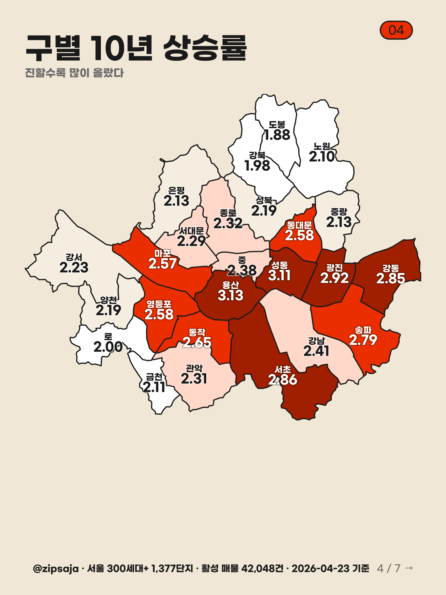

01
2016 → 2026, 10년치 실거래 다 봤어
강남이
1위?
아니야
@zipsaja
1 / 10 →
02
10년 전이랑 지금, 진짜 비교해봤거든
서울 25개 구,
진짜 1위
알려줄게
집사자 큐레이션 기준
서울
300세대 이상
아파트
1,377 단지
· 실거래
238만건
@zipsaja
2 / 10 →
03
조건 단순해
24평
(전용 56~63㎡)
기준
2016 vs 2026
평균 거래가
몇 배
올랐나
①
실거래만 봄 (호가 X, 매물가 X)
②
취소된 거래 제외
③
2016년 vs 2026년 평균값 그대로
@zipsaja
3 / 10 →

05
두구두구...
상승률
TOP 5
1위
용산
3.13배
2위
성동
3.11배
3위
광진
2.92배
4위
서초
2.86배
5위
강동
2.85배
강남 안 보이지? 11위야
@zipsaja
5 / 10 →
06
진짜 1위, 용산
3.13배
10.6억 →
33.2억
왜 용산이 올랐을까?
· 한남뉴타운 진행
· 용산 국제업무지구 재추진
· 강·역세권 신축 프리미엄
강남 제친 거 신기하지?
@zipsaja
6 / 10 →
07
근데 강남은…
11위
2.41배 올랐어
"이미 비싸서 추가 상승률이 평범"
11.0억 → 26.5억 (2.4배)
절대 가격은 여전히 1위지만, 비율로 보면 신축·신흥 동네가 더 컸어.
절대값 vs 상승률, 다른 얘기야
@zipsaja
7 / 10 →
08
위 vs 아래
10년 사이
격차
도 더 벌어졌어
용산
3.13
배
도봉
1.88
배
→ 격차 1.7배 더 벌어짐
위쪽은 더 빠르게, 아래쪽은 더 느리게.
@zipsaja
8 / 10 →
09
10년이 보여준 패턴
어디가 답이었나
✓
강 + 역세권 + 신축
조합
✓
일자리 거점 인접
(성수·용산)
✓
재건축·뉴타운 호재
가 누적된 동네
다음 10년도 비슷할까?
@zipsaja
9 / 10 →
10
너 동네는
몇 배 올랐어?
DM에 동네 이름 보내봐 — 내가 정리해줄게
팔로우 →
저장하기
@zipsaja
10 / 10